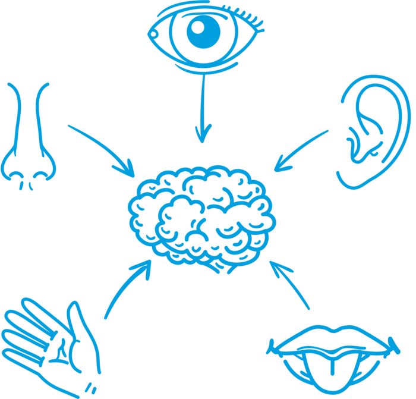
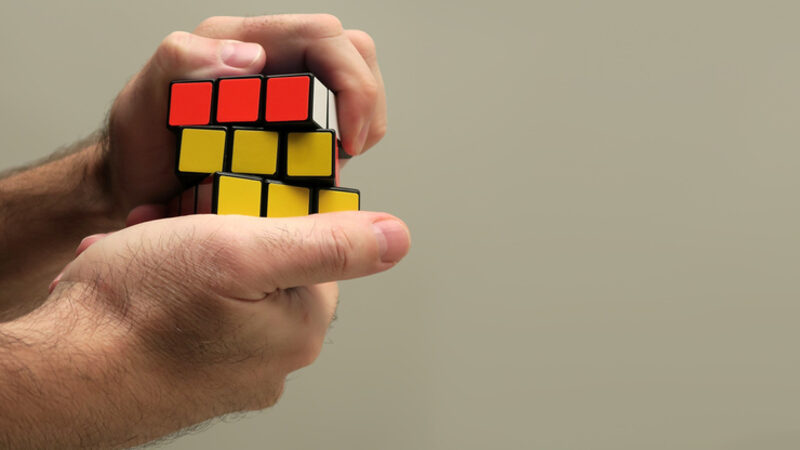
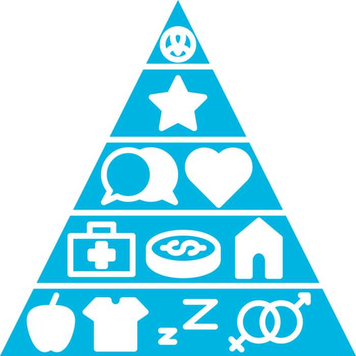
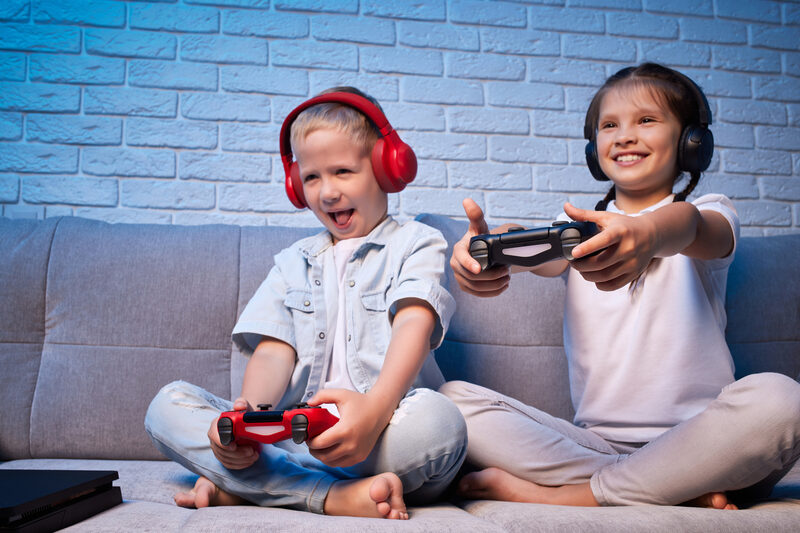
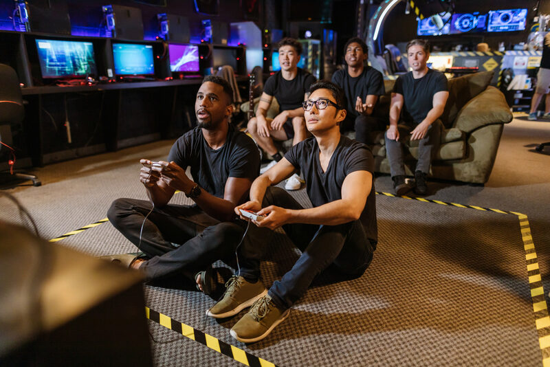
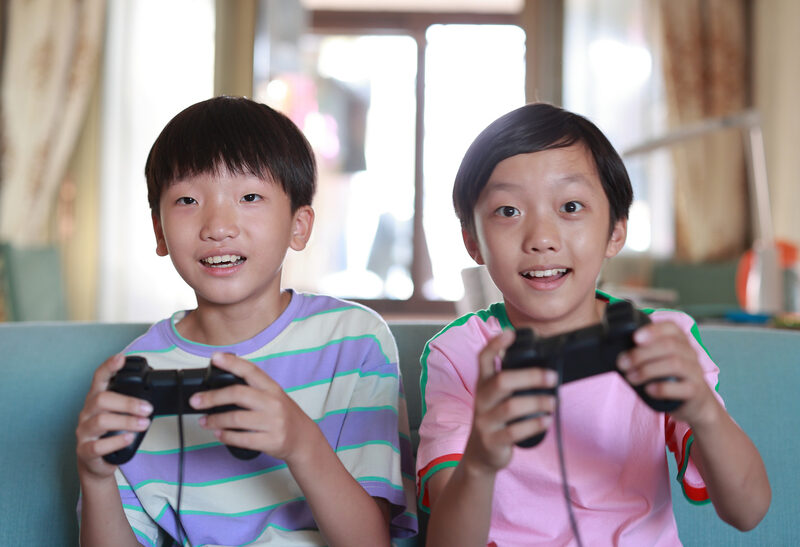

Player psychology,
motivation & behaviour
Who plays, why they play, and how design shapes what they do
BSc (Hons) Game Design & Development
Why do you play the games you play?
Not which games. Why. What do you get from them?
By the end of today you can…
Explain how players think
Perception, decision-making, problem-solving and memory, and what each means for design.
Compare player models
Bartle's four types, Yee's components and the Quantic Foundry profile.
Apply motivation theory
Self-determination theory, and intrinsic vs extrinsic motivation, to real mechanics.
Judge behavioural design
How games predict, influence and encourage behaviour, and where that becomes a dark pattern.
Five stops
How players think
Perception, decisions, memory, emotion
Who plays
Bartle, Yee, Quantic Foundry
Why they play
Maslow, SDT, intrinsic vs extrinsic
Shaping behaviour
Loops, rewards, cues, dark patterns
Engagement
What it's made of, and where it leads
How players
think
Cognitive processes and emotional responses
The player is the other half of the system
A game only exists when someone plays it. To design well we need to understand four things:
Cognitive processes
How they perceive, think and remember
Emotional responses
What they feel, moment to moment
Player types
What different players are after
Motivation
Why they start, and why they stay

What gets in
Colour, shape, contrast and space. Red means danger, glowing means "pick me up", and big means important.
Music sets the mood; cues warn and confirm. You often hear the enemy before you see it.
Rumble, adaptive triggers, resistance. The DualSense makes a bowstring feel tight.
Players build models of your game
- Mental models: an internal picture of how the world and its rules work. Players test and revise it constantly.
- Pattern recognition: spotting the boss's tell, the enemy's route, the puzzle's trick.
- Strategic thinking: planning ahead from the current state of play.
When the game breaks the player's model without warning, it feels unfair.

Every choice is designed
Choice architecture
How options are framed and ordered changes what people pick: the default, the highlighted button, the "recommended" build (Thaler & Sunstein, 2008).
Risk vs reward
Players weigh gains against losses, and losses hurt about twice as much (Kahneman & Tversky, 1979). Losing an hour's progress feels far worse than gaining one.
Heuristics
Mental shortcuts for fast decisions: "red barrels explode", "the chest in the corner is worth it".
Working memory is small
Working
What you're using now: about four chunks (Cowan, 2001).
Long-term
Controls, strategies, lore. Built by practice.
Recognition
"I've seen this icon." Cheaper than recall.
Players solve problems by analysis, creativity and trial and error, and all three lean on memory.
Teach one thing at a time. Keep the HUD lean. Use icons players already know. Don't make them remember what the game could show.
Emotions are what players remember
Overcoming a real challenge.
fiero, frustrationExploring, fiddling, role-play.
wonder, surprisePlaying to change how you feel.
relaxation, excitementPlaying with and against others.
amusement, schadenfreudeMap the warm-up answers onto these four. Which key is missing from the board?
Who
plays
Player types, and why boxes aren't enough
Four types, two axes
From players of MUDs, the text-based ancestors of MMOs. Do you prefer to act on or interact with the world or other players?
The types form an ecosystem: Killers need people to fight, Socialisers need people to talk to, and too many Killers drive everyone else away.
Useful vocabulary, poor measuring instrument
Built from MUD players in the 1990s: one genre, one decade, mostly one demographic.
Most people are a mixture that shifts with the game, the mood and who they're playing with.
It was an observation, not a test. Bartle himself later extended it to eight types (2003).
So researchers moved from four boxes to continuous dimensions, measured with questionnaires.
Three components of motivation
Advancement · mechanics · competition
Socialising · relationships · teamwork
Discovery · role-play · customisation · escapism
The difference from Bartle: these are scores. You can be high on all three, or none. And they came from data.
Six clusters, twelve motivations
Action
Social
Mastery
Achievement
Immersion
Creativity
Take the free profile: quanticfoundry.com. Your result is a shape, not a label.
Why they
play
Needs, motivation and the reward trap
A hierarchy of needs
Physiological needs at the base, then safety, love and belonging, esteem, and self-actualisation at the top. Lower needs must be met before higher ones matter.
Survival games climb it literally: food and shelter first, then safety, then a base, a clan, a reputation.
It's a loose fit. Where does "forming an alliance to survive a raid" sit? People chase belonging while hungry all the time. Handy for pitching, weak for designing.

Three needs that make play feel good
SDT predicts who keeps playing
Across several studies, players' sense of autonomy and competence predicted how much they enjoyed a game and whether they wanted to play again, more than genre or graphics did.
Intuitive controls (you can't feel competent fighting the controller) and presence, the sense of being in the game world.
Design test: for every mechanic, ask which need does this serve, and which might it undermine?
Intrinsic vs extrinsic motivation
Challenge · curiosity · control · fantasy, plus cooperation, competition and recognition.
masterypurposefunautonomyrelatedness
Points, prizes and status you get for doing it, whether or not you enjoyed it.
pointsbadgesleaderboardslootmoney
Most games mix both. The question is which one is doing the work.
Paying people to play can kill the fun
Children who loved drawing were promised a certificate for drawing. Later, with no reward on offer, they drew less than children who'd never been rewarded (Lepper, Greene & Nisbett, 1973).
Across 128 studies, expected, tangible rewards reliably undermined intrinsic motivation (Deci, Koestner & Ryan, 1999).
"Do this and you'll get that." Play becomes work.
"Look how good you've got." It feeds competence.
"Just add points" is not a design.
Shaping
behaviour
Predict, influence, encourage, and where to stop
Predict · influence · encourage
Know them
Profiles and telemetry show what players actually do.
Guide them
Reward them
Snowball or catch-up?
Positive loops reward the leader and end games decisively, but can feel hopeless from behind.
Negative loops keep things close and tense, but can feel unfair to the skilled player.
Most good games use both, deliberately.
When the reward arrives matters
Fixed ratio
Level up every 1,000 XP. A burst of effort, then a pause.
Fixed interval
Daily login bonus. Players turn up on schedule.
Variable ratio
Loot drops, gacha, loot boxes. The most persistent behaviour, and the hardest to stop.
Variable interval
Random world events. Players keep checking in.
Guiding without telling
Light
Players walk towards light. A lit doorway is an instruction.
Colour
Yellow paint on climbable ledges; red on things that explode.
Sound
A chime near a secret; music that shifts when danger is close.
Shape
Level geometry that funnels the eye and the feet.
Good cues feel like your own idea. Heavy-handed cues take away autonomy.
Dark patterns: design against the player
Your time
Grinding; playing by appointment ("come back in 4 hours or your crops die").
Your money
Pay to skip the grind the game created; paying to beat your friends.
Your friends
Spamming contacts for lives; guilt when you let your team down.
Where is the line between engaging and exploiting?
1:00Engagement
What it is, and what it's made of
Involved, interested, invested
How far players are involved, interested and emotionally invested in a game: their motivation to keep going, their absorption in the world, and their commitment to its goals.
Look at the faces. These are stock photos, but nobody needed to tell them how to look.



What engagement is made of
Immersion
Feeling present in the world and involved in its activities.
Emotional connection
Excitement, satisfaction, empathy with characters.
Agency
Meaningful choices that change the world, the story or the outcome.
Active participation
Decisions, problem-solving and skill-building, not just watching.
Believable worlds and sound · stories that make you care · first-person or close third-person camera.
Meaningful choices · visible consequences · more than one way to solve a problem.
Engagement at its peak: flow
Why challenge has to match skill, what immersion is made of, and what breaks both. You'll test it on yourselves.
Before then: take the 12-question Hexad user type test and note your top type. You'll need it in the practical. Optional: the Quantic Foundry profile too.
Five things to remember
Players have limited attention and working memory. Design for it.
Player types are profiles, not boxes. Bartle gives vocabulary; Yee and Quantic Foundry give data.
Autonomy, competence, relatedness. Ask which need each mechanic serves.
Controlling rewards can crowd out enjoyment. "Just add points" is not a design.
Behaviour design has an ethical edge. Engage players; don't exploit them.
Bartle, R. (1996) 'Hearts, clubs, diamonds, spades: players who suit MUDs', Journal of MUD Research, 1(1).
Bartle, R. (2003) Designing Virtual Worlds. Indianapolis: New Riders.
Cowan, N. (2001) 'The magical number 4 in short-term memory', Behavioral and Brain Sciences, 24(1), pp. 87–114.
Deci, E. L. (1971) 'Effects of externally mediated rewards on intrinsic motivation', Journal of Personality and Social Psychology, 18(1), pp. 105–115.
Deci, E. L., Koestner, R. and Ryan, R. M. (1999) 'A meta-analytic review of experiments examining the effects of extrinsic rewards on intrinsic motivation', Psychological Bulletin, 125(6), pp. 627–668.
Kahneman, D. and Tversky, A. (1979) 'Prospect theory: an analysis of decision under risk', Econometrica, 47(2), pp. 263–291.
Lazzaro, N. (2004) 'Why we play games: four keys to more emotion without story'. XEODesign.
Lepper, M. R., Greene, D. and Nisbett, R. E. (1973) 'Undermining children's intrinsic interest with extrinsic reward', Journal of Personality and Social Psychology, 28(1), pp. 129–137.
Malone, T. W. and Lepper, M. R. (1987) 'Making learning fun: a taxonomy of intrinsic motivations for learning', in Snow, R. E. and Farr, M. J. (eds) Aptitude, Learning, and Instruction, vol. 3. Hillsdale, NJ: Erlbaum.
Maslow, A. H. (1943) 'A theory of human motivation', Psychological Review, 50(4), pp. 370–396.
Ryan, R. M. and Deci, E. L. (2000) 'Self-determination theory and the facilitation of intrinsic motivation, social development, and well-being', American Psychologist, 55(1), pp. 68–78.
Ryan, R. M., Rigby, C. S. and Przybylski, A. (2006) 'The motivational pull of video games: a self-determination theory approach', Motivation and Emotion, 30(4), pp. 344–360.
Thaler, R. H. and Sunstein, C. R. (2008) Nudge. New Haven: Yale University Press.
Yee, N. (2006) 'Motivations for play in online games', CyberPsychology & Behavior, 9(6), pp. 772–775.
Zagal, J. P., Björk, S. and Lewis, C. (2013) 'Dark patterns in the design of games', Proceedings of Foundations of Digital Games 2013.